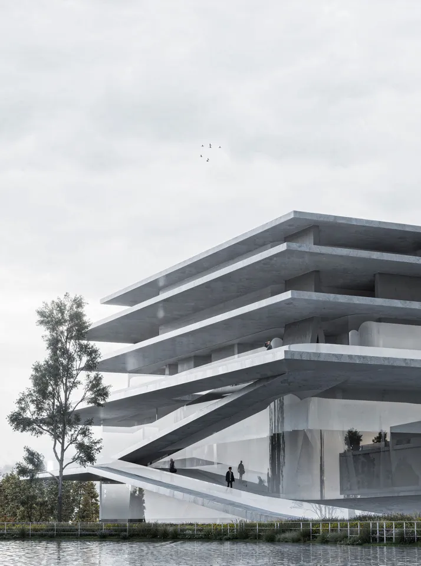
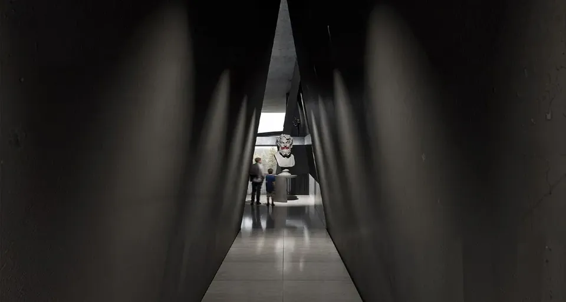
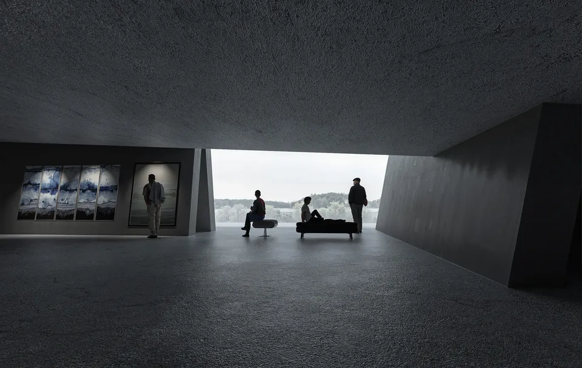
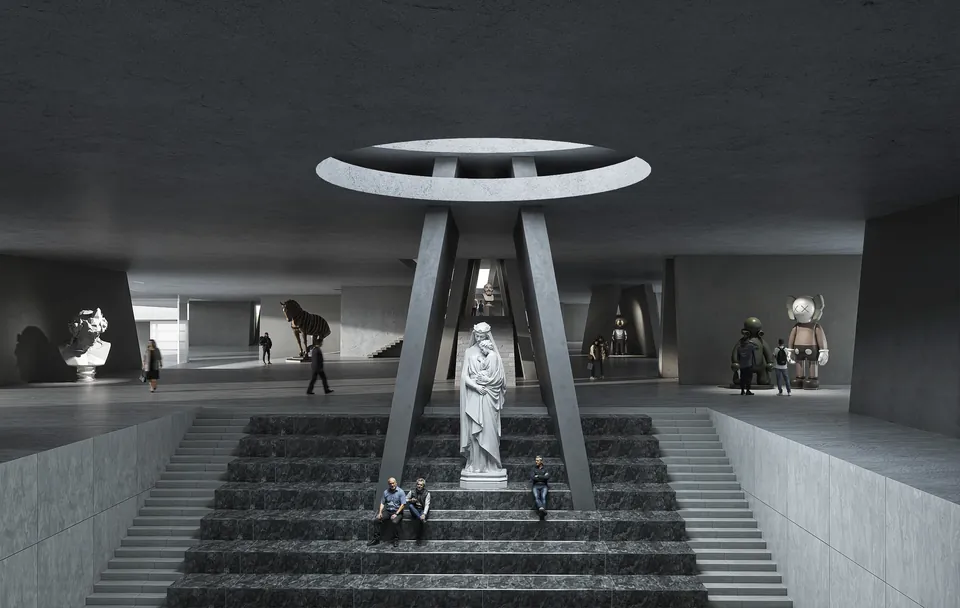

Vision Art Gallery
視界美術館
Architecture as an experience of perception.

Design approach
An A-frame column system packs the lower floors into small, close-range rooms for sculpture, then widens floor by floor until the city itself becomes the exhibit. Ramps built into the slabs carry visitors upward without a clear moment of arrival.
Connection to research
Reading a place through movement, distance and light—rather than simply representing a building—later became the starting point for environmental-evidence research.
- Year
- 2021
- Location
- Tainan, Taiwan
- Role
- Individual design (sole designer)
- Type
- Graduation project · Art gallery
- Context
- University graduation project · Kun Shan University, Dept. of Spatial Design
This is the founder’s individual academic design, not a project contracted or completed by RSA. No RSA-based environmental analysis is claimed for this project. Images are design visualisations, not photographs of a built project.




